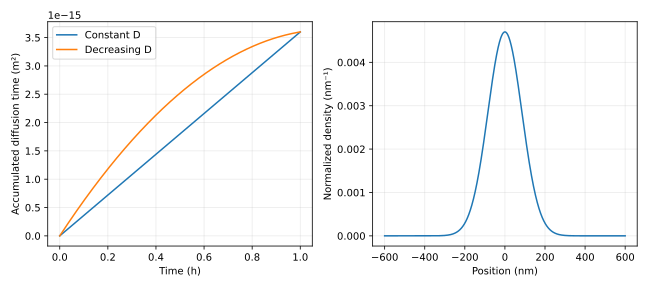

IIT Hyderabad · NPTEL · Independent study edition
Diffusion and structural relaxation in metallic glasses
Two metallic-glass specimens at the same temperature can retain different structures because they were cooled and annealed differently. A tracer profile can then record an integrated history of mobility rather than one stationary coefficient. The inverse problem is to determine which part of that history the profile actually contains.
Source spine: metallic glasses in L56 and the glass tutorial in L59. The accumulated-time derivation and equal-profile construction are original developments. Metallic glasses are the scope here; the discussion is not a universal transport model for oxide, polymer, or molecular glasses.
26.1 A glass lacks periodicity, not all order L56 00:20
A metallic glass is an amorphous metallic material lacking the long-range translational periodicity of a crystal. Nearest-neighbor coordination, chemical preferences, and short- or medium-range structural correlations can nevertheless be well developed. Broad diffraction features distinguish its average structure from a periodic crystal's sharp Bragg pattern; broadness does not establish that every atom has an uncorrelated random environment.
Without an ordinary crystal lattice, crystalline dislocations and grain boundaries are not a complete description of its structural defects. The absence of those particular objects does not imply absence of spatial heterogeneity, free-volume-like configurations, or localized rearrangements. Mechanical and magnetic properties depend on composition and history. In particular, high strength does not establish universal tensile ductility, and no single property ranking applies to every metallic glass.
The relevant state includes more than temperature and composition. Cooling rate, deposition route, prior annealing, and residual stress can change the initial configuration. A diffusion experiment therefore needs a structural preparation protocol and time origin. “The diffusivity of the alloy” is ambiguous if the glass continues relaxing during the measurement. Crystal formation during the anneal introduces another phase and requires a multiphase model rather than a stationary amorphous coefficient.
Primary X-ray photon correlation work directly examines thermal-history-dependent aging in a particular metallic glass, rather than assuming that only the supercooled liquid evolves: Ruta etal., abstract, introduction, and experimental description, published as Physical Review Letters109,165701. That experiment concerns Mg–Cu–Y structural dynamics. It supports the relevance of sub-transition aging; it does not provide the lecture's Vitreloy4 tracer coefficients or a universal law for every glass.
26.2 Formation competes with crystallization kinetics L56 03:22
Cooling a liquid slowly can permit nucleation and crystal growth. Cooling sufficiently rapidly can avoid detectable crystallization and retain an amorphous configuration. A time–temperature–transformation diagram records a specified detectable transformed fraction after isothermal holding. Its “nose” indicates a temperature range where crystallization reaches that criterion most quickly. At small undercooling, the thermodynamic driving force is weak; at deep undercooling, atomic rearrangement is slow. Their competition can produce the intermediate-temperature minimum in transformation time.
This explanation is kinetic and thermodynamic together. The driving force is not universally an exact inverse-temperature law, and the transformation time is not just a tracer jump time. Nucleation barriers, growth, heterogeneous sites, and the chosen detectable fraction matter. A cooling path that misses one idealized isothermal nose is a useful design picture, but real continuous-cooling kinetics require their own treatment. Critical cooling rate and the thickness that can vitrify are strongly composition dependent.
The operational glass-transition temperature \(T_g\) is detected through a change in response, such as heat capacity, over the observation time of a particular heating protocol. It depends on heating rate and prior history. A heat-capacity step does not by itself establish an equilibrium second-order phase transition. A later crystallization exotherm identifies another process, not the same event under a different name.
The fictive temperature is a parameter describing the structural state, often obtained by matching an extrapolated liquid-state enthalpy or volume to that of the frozen configuration. It need not equal the measured \(T_g\), and no universal small offset between them is implied. Two samples can therefore share the same measurement temperature but have different enthalpy, density, and relaxation state. These distinctions explain why a diffusion comparison must specify its preparation and annealing schedule.
Tracer diffusion and viscosity measure related but distinct motions. Viscosity describes resistance to collective shear flow; tracer diffusion follows individual atomic displacements. A hydrodynamic Stokes–Einstein relation introduces a continuum fluid and effective probe-size model that need not hold unchanged for atoms in an aging glass. A qualitative viscosity trend cannot substitute for a species-specific tracer measurement. We do not infer an unmeasured glass coefficient from an assumed atomic radius.
26.3 Relaxation changes the transport state L56 12:39
Structural relaxation changes the amorphous configuration without requiring crystallization. It can alter enthalpy, density, viscosity, mechanical response, and atomic mobility. Relaxation occurs below as well as near the operational transition. A small density change accompanied by a large diffusion change is possible because a rate depends exponentially on free-energy barriers; it does not prove that one scalar free-volume parameter uniquely controls every jump.
For a deliberately reduced model, assume an isothermal specimen whose structural state is spatially uniform but changes with elapsed time. Let \(D(t)\geq0\) be a scalar instantaneous tracer diffusivity, in m²s⁻¹, and \(c(x,t)\) the dilute tracer molar concentration on the infinite line \(-\infty<x<\infty\). With no reaction, drift, or concentration-dependent mobility,
\[\partial_tc=D(t)\partial_x^2c,\qquad \tau(t)=\int_0^tD(s)\,ds.\tag{26.1}\]The accumulated variable \(\tau\) has units m², not seconds. If \(c(x,t)=u(x,\tau(t))\), the chain rule gives \(\partial_tc=D(t)\partial_\tau u\). Wherever \(D>0\), cancellation yields \(\partial_\tau u=\partial_x^2u\). On an interval with zero diffusivity, \(\tau\) and the concentration remain fixed, so the same accumulated-time representation extends continuously through that interval. For integrable nonnegative \(D\), the heat-semigroup construction supplies the corresponding weak solution.
For an instantaneous plane source of areal molar amount \(M\), in molm⁻², the ordinary concentration density below applies at times with \(\tau(t)>0\). If \(\tau(t)=0\), no spreading has occurred: the tracer remains in its initial plane distribution, rather than having a finite Gaussian density. The second-moment identity extends to that zero-width limit.
\[c(x,t)=\frac{M}{\sqrt{4\pi\tau(t)}}\exp[-x^2/(4\tau(t))],\qquad \langle x^2\rangle=2\tau(t).\tag{26.2}\]The angle brackets denote the normalized tracer second moment; symmetry makes its mean position zero. Integrating the Gaussian conserves \(\int c\,dx=M\). This is an exact consequence of the reduced model. Spatially varying aging, nonlocal jump memory, stress drift, or coexistence with crystals does not automatically reduce to one accumulated scalar. Time-dependent boundary concentrations must also be transformed through the mapping \(t\mapsto\tau\), rather than held fixed by assumption.
26.4 A final profile loses the time history L56 16:45
Define the time-averaged diffusivity \(\bar D(t)=\tau(t)/t\) for \(t>0\). Differentiating \(t\bar D(t)=\tau(t)\) gives
\[D(t)=\bar D(t)+t\frac{d\bar D}{dt}.\tag{26.3}\]A single final Gaussian identifies \(\tau(t)\), hence one average, but not the derivative in (26.3). A time series from identically prepared specimens can constrain the history, subject to uncertainty and numerical differentiation. If preparation differs across anneals, treating their averages as samples of one history is not justified.
The laboratory constructs two strictly nonnegative histories over \(0\leq t\leq t_f\). History A has constant \(D_A=D_0\). History B has \(D_B=D_0[1+a(1-2t/t_f)]\), with \(0<a<1\). Integration gives \(\tau_B=D_0[(1+a)t-at^2/t_f]\). At the final time both histories have \(\tau=D_0t_f\) and exactly the same complete pulse profile. At half-time their accumulated values differ.
For synthetic \(D_0=10^{-18}\)m²s⁻¹, \(t_f=3600\)s, and \(a=0.8\), the final accumulated value is \(3.6\times10^{-15}\)m² and root-mean-square width84.8528nm. At half-time, A has \(1.8\times10^{-15}\)m² and B \(2.52\times10^{-15}\)m². A half-time measurement would distinguish them even though an arbitrarily precise final profile would not.

The source tutorial at L59 08:30 specifies \(D(t)=10^{-15}\,\mathrm{m^2h^{-1}}[300-u/3-u^2/30]\), where \(u=t/(1\,\mathrm h)\). Integrating the polynomial gives \(\bar D=10^{-15}[300-u/6-u^2/90]\)m²h⁻¹. At48h, \(\bar D=2.664\times10^{-13}\)m²h⁻¹, or \(7.4\times10^{-17}\)m²s⁻¹, whereas instantaneous \(D=2.072\times10^{-13}\)m²h⁻¹. The source slide's handwritten answer agrees; the caption's different exponent is transcription noise. The polynomial reaches zero at90h and must not be extended beyond that into negative diffusivity.
26.5 A kink or a small activation volume is not a unique mechanism L56 17:47
The source discusses a Vitreloy4 example with an apparent break between temperature slopes and emphasizes incomplete relaxation as a competing explanation. A kink can reflect different structural histories in the measurements, multiple transport contributions, or a mechanism change. Without controlled equilibration and phase checks, a pair of straight lines does not select among them. Exact compositions and numerical kink temperatures are not inferred from unread data tables here.
Pressure supplies another derivative. Define apparent molar activation volume \(V_{\mathrm{app}}=-RT(\partial\ln D/\partial p)_T\), in m³mol⁻¹, where pressure \(p\) is in pascals. A value near zero means that the measured logarithmic rate has weak net pressure sensitivity over the sampled range. It does not prove that no localized configurations participate. Formation and migration contributions can cancel, different channels can compensate, and a crystalline-vacancy decomposition may not be the right description of an amorphous rearrangement.
A collective event moves several atoms in a correlated manner. For example, a synthetic chain can shift each atom into the space vacated by its neighbor; a labeled atom moves even if the net displacement of the chain's center is small. Distinguishing tracer displacement from collective charge or density displacement requires tracking identities and cross-correlations. Such motion is not exclusive to glasses. Primary work on a different Zr–Cu–Ni–Al glass reports structural correlations and sub-transition local rearrangement, as discussed in Liu etal., Results and Figure5 discussion. The inspected publisher-indexed text supports that scoped statement, not numerical parameters for Vitreloy4.
26.6 Laboratory, exercises, and worked solutions
The laboratory writes the two histories, their identical final profile, the source polynomial calculation, and Gaussian quadrature checks to saved output. The normalized profile integrates to one within \(2\times10^{-12}\); its second moment agrees with \(2\tau\) within the finite integration-window error. The continuum equal-profile result is analytic; the zero numerical difference is a check of its implementation.
Average versus instantaneous. If \(D(t)\) decreases monotonically, compare it with \(\bar D(t)\).
Solution
Every earlier value \(D(s)\), for \(0\leq s\leq t\), is at least \(D(t)\). Integrate and divide by \(t\) to obtain \(\bar D(t)\geq D(t)\). Equation(26.3) then gives \(d\bar D/dt\leq0\). Equality throughout requires a constant history, apart from sets of zero measure.
Source polynomial domain. Find the nonnegative-time endpoint of the tutorial model.
Solution
Set \(300-u/3-u^2/30=0\), or \(u^2+10u-9000=0\). Its roots are90 and−100. Thus the specified polynomial is nonnegative for \(0\leq t\leq90\)h. Beyond that it predicts backward diffusion and is physically inadmissible as a scalar Fickian coefficient. A finite-range polynomial fit must not be extrapolated indefinitely.
History ambiguity. Prove that infinitely many histories yield the same final pulse profile.
Solution
Start from any positive history and add an integrable perturbation \(h(t)\) with zero integral over the experiment and sufficiently small amplitude to preserve nonnegativity. Its final \(\tau\) is unchanged, so (26.2) gives the identical full profile. There are infinitely many such zero-integral functions. More accurate final depth measurements cannot identify an unobserved time dependence within this model.
Boundary transformation. If surface concentration is prescribed as \(c(0,t)=g(t)\), what is its accumulated-time form?
Solution
Where the map is invertible, write \(u(0,\tau)=g(t(\tau))\). A constant surface value stays constant; a time-varying one generally changes its functional form. If \(D=0\) over an interval, an ordinary inverse is not unique, and the boundary compatibility must be addressed separately. The simple pulse result avoids this boundary complication by working on the infinite line.
Kinetic transition. Why can two heating rates give different apparent \(T_g\) without changing composition?
Solution
The transition is operationally detected when structural relaxation becomes relevant to the observation time. Changing heating rate changes the time spent in each temperature interval and the structure reached before the signal is measured. Composition alone therefore does not fix the observed onset. A thermal protocol and detection convention belong in the reported value.
Pressure inference. Does zero apparent activation volume prove independent single-atom jumps?
Solution
No. It constrains one pressure derivative of the measured rate. Collective and localized models can both have small net derivatives, and contributions with opposite signs can cancel. Additional observables, such as species-dependent displacement correlations, structural dynamics, or controlled history dependence, are needed to discriminate mechanisms. The derivative is useful evidence with limited identifiability.
Python laboratory
Run code/ch26.py. Inputs and scientific limits are specified in the chapter and program.
Complete runnable source
"""Accumulated diffusion time and a frame-verified glass tutorial."""
from pathlib import Path
import json
import numpy as np
import matplotlib
import matplotlib.pyplot as plt
matplotlib.use("Agg")
matplotlib.rcParams["svg.hashsalt"] = "ch26"
ROOT = Path(__file__).resolve().parents[1]
def main():
D0, end, amplitude = 1e-18, 3600.0, 0.8
t = np.linspace(0, end, 501)
tau_A = D0 * t
tau_B = D0 * ((1 + amplitude) * t - amplitude * t * t / end)
x = np.linspace(-10 * np.sqrt(D0 * end), 10 * np.sqrt(D0 * end), 2001)
def profile(tau):
return np.exp(-x * x / (4 * tau)) / np.sqrt(4 * np.pi * tau)
pa, pb = profile(tau_A[-1]), profile(tau_B[-1])
assert np.max(np.abs(pa - pb)) == 0
norm = float(np.trapezoid(pa, x))
moment = float(np.trapezoid(pa * x * x, x))
assert abs(norm - 1) < 1e-10
assert abs(moment / (2 * D0 * end) - 1) < 1e-8
h = 48.0
mean = (300 - h / 6 - h * h / 90) * 1e-15
instant = (300 - h / 3 - h * h / 30) * 1e-15
out = {
"status": "synthetic histories; separate source tutorial calculation",
"history_example": {
"D0_m2_s": D0,
"end_s": end,
"amplitude": amplitude,
"tau_final_m2": float(tau_A[-1]),
"tau_A_half_time_m2": float(D0 * end / 2),
"tau_B_half_time_m2": float(D0 * end * (0.5 + amplitude / 4)),
"final_profile_max_difference": float(np.max(abs(pa - pb))),
"normalization": norm,
"variance_m2": moment,
"rms_width_m": float(np.sqrt(moment)),
},
"lecture59_polynomial": {
"time_h": h,
"mean_D_m2_h": mean,
"instant_D_m2_h": instant,
"mean_D_m2_s": mean / 3600,
"positive_time_limit_h": 90.0,
},
}
fig, axes = plt.subplots(1, 2, figsize=(9, 4))
axes[0].plot(t / 3600, tau_A, label="Constant D")
axes[0].plot(t / 3600, tau_B, label="Decreasing D")
axes[0].set(xlabel="Time (h)", ylabel="Accumulated diffusion time (m²)")
axes[0].legend()
axes[1].plot(x * 1e9, pa * 1e-9, label="Both final profiles")
axes[1].set(xlabel="Position (nm)", ylabel="Normalized density (nm⁻¹)")
for ax in axes:
ax.grid(alpha=0.25)
fig.tight_layout()
fig.savefig(ROOT / "assets/ch26-histories.svg", metadata={"Date": None})
plt.close(fig)
(ROOT / "code/ch26-output.json").write_text(
json.dumps(out, indent=2) + "\n"
)
print(json.dumps(out, indent=2))
if __name__ == "__main__":
main()
Recorded execution output
{
"status": "synthetic histories; separate source tutorial calculation",
"history_example": {
"D0_m2_s": 1e-18,
"end_s": 3600.0,
"amplitude": 0.8,
"tau_final_m2": 3.6e-15,
"tau_A_half_time_m2": 1.8e-15,
"tau_B_half_time_m2": 2.52e-15,
"final_profile_max_difference": 0.0,
"normalization": 0.9999999999984623,
"variance_m2": 7.199999999424668e-15,
"rms_width_m": 8.485281373899553e-08
},
"lecture59_polynomial": {
"time_h": 48.0,
"mean_D_m2_h": 2.664e-13,
"instant_D_m2_h": 2.0720000000000002e-13,
"mean_D_m2_s": 7.400000000000001e-17,
"positive_time_limit_h": 90.0
}
}